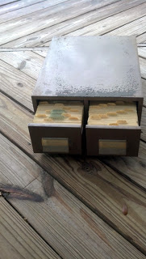

The Apostle Paul said: “For when I preach the gospel, I cannot boast, since I am compelled to preach. Woe to me if I do not preach the gospel!” (1 Corinthians 9:16). The anchor of our preaching must be the Good News of Jesus. It is so easy to get drawn into social commentary or political concerns or something similar. Don’t get me wrong, there’s a time and place to address current issues. However, they must always be addressed in the context of the Gospel message. “Our nation believes thus-and-so but, in Christ, the Lord offers us a better way.” It is so easy for the preacher to use pulpit time to denounce everything that is wrong while neglecting the hope that Jesus brings to the world. In the 1 Corinthians passage Paul is challenging the church’s treatment of himself. They have taken him for granted and even accused him of trying to boss them around. Paul defends himself, but also states, “we put up with anything rather than hinder the gospel of Christ.” For him, it is all about getting the Good News out. Pastor don’t squander your pulpit time on other stuff. When you do point out sin in society do so only to offer hope for the sinner. Our calling is clear: preach the Gospel.
Tag: Bible
{kind=link}
On the subject of forgiveness
My son, Scott, talking about forgiveness…
My how things have changed
As a young preacher (and I started preaching at age 16) I was encouraged to use lots of Scripture references in my preaching. I probably overdid it and over time dialed things back, especially as I moved away from proof texting.
Still, I often mention different verses in a sermon, generally to give an example of what I’m talking about.
At first, I took strips of paper and numbered them in the order of verses I intended to mention. I bookmarked my Bible with those bits of paper so I could easily find the verses. As you can guess, it wasn’t a very good plan and sometimes left me searching, first for that numbered slip of paper and, not seeing it for some reason, for the passage itself.
{kind=link}
My next plan of action was to type the verse directly into my notes. That solved the slips of paper problem and worked okay. However, at some point it dawned on me that I was going to be typing some verses many times in my preaching career.
So, I hit upon a plan. Every time I referred to a verse, I’d take time to type it onto a 3×5 card. In my sermon notes, I simply included the reference. I’d organize the cards in order for that sermon, then, after the service, I’d file the cards by book of the Bible.
From that point on a part of sermon preparation was to go through my Bible verse file and see if I’d already added the verses I wanted for the sermon. I’d add the news ones for that sermon and then file them after the sermon.
As you can guess, after 20 years of so of preaching, I developed quite a file system. It was so useful that it crossed my mind that the file box and cards needed to be placed into the hands of some young preacher when my preaching days were over.
{kind=link}
Then in the mid-1990’s I added a computer to my study and things began to change. I now had the Bible in electronic form and in multiple translations. Inserting the text of a verse into the sermon notes was a simple copy/paste process. My extensive collection of 3×5 cards was no longer necessary.
For years the file box remained on my desk simply because that is where it had always been. Finally, needing desk space, I moved it to storage in the attic. There it stayed for several years until today.
I decided it was time for me to clear out the attic and there, covered with dust, was my old file box of scriptures. In spite of the countless hours of work represented by those 3×5 cards it was time for it to go. I reluctantly brought the poor old filebox down, took these final photos of it, and put it all in the recycle bin. Just awhile ago the pickup crew came, and not knowing or caring what was in the bin, carried it off.
{kind=link}
Looking back on my system, I think I hit on a good plan. I accomplished exactly what needed to be accomplished. Not only that, but by typing out the passages, I became more intimate with them.
Still, over time, things change and the need for that approach is now part of my personal past. Happily, even though the way I handled the Bible has changed, I’m glad to report that it’s message is just as current and needed as ever before.
{kind=link}
Reading the Word of the Lord
Most of the Bible was written to be read aloud. There are a few personal letters, etc., but by and large the writers never envisioned people owning personal, leather bound, red letter, annotated copies of their words. Prior to the invention of the printing press and the Reformation, a big part of going to church was listening to someone read Scripture. For the vast majority of Christians it was only at church that they encountered the Bible. Being a reader of Scripture in church was a honor and privilege. The reader took that job seriously and prepared for that part of worship with all the effort of a preacher or singer.
With all this in mind, over a year ago I decided to read the New Testament through out loud. When I finished the New Testament I decided to continue on with the Old Testament and I have now finished the entire Bible.
It has been an interesting journey. There are passages I know fairly well and usually when I read them I unintentionally go into a sort of hyper drive and speed my way through them. Not this time. It was word by word. The whole process was slower, more methodical. I tended to hear the message differently than when I just read silently. I’m not about to tell you that I think it’s vastly superior. I will tell you that it’s different. I came away with a different feeling about some passages than before.
The Old Testament prophets were a challenge. Sometimes there is page after page of condemnation; lots of doom and gloom. Reading aloud made me feel somewhat depressed. On a practical level, I realized how repetitive some of those writings are. The prophet says something one way, then he repeats it another way, and then does it all over again. Doing it out loud made that somehow more obvious to me than before.
Another challenge is names. Some portions, in Numbers for instance, are lists of names. Many of the prophets spend a lot of time with names of towns. I cut myself just a bit of slack on the names. If I didn’t immediately recognize the name I’d just say the first letter of the name and keep reading: “A son of Z, son of Benjamin.” I guess that was cheating a bit, but since no one was listening but me I decided it was a reasonable course of action.
One thing about all those names of people and places, was that it reminded me of just how grounded those stories are in history. These are real people and real places. I know it because the writer named names.
I don’t suggest that everyone ought to do this. Many people just need to read the Bible; to get on a plan and stick with it. The more you read the more you come to love the Bible. If you haven’t been reading the Bible, just commit yourself to one page a day. Start with the Gospels. Make it easy on yourself. Some start off in Genesis, enjoy the opening stories and then can’t make it through Exodus not to mention Leviticus. When you are ready to tackle the Old Testament, mix it in with the New Testament. Do one chapter of the New and one chapter of the Old each day. Throw in one Psalm each day if you have time. Reading the Bible through is a journey and not a race.
Then, maybe someday, you’ll be looking for a different approach. When you get there, you might want to try it out loud. Reading God’s Word as it was originally read does have it’s rewards.
Holy Week Scripture Readings
Holy Week Scripture Readings
Sunday: Mark 11:1-11
Monday: Mark 11:12-19
Tuesday: Mark 11:20-33
Wednesday: nothing recorded, but Mark 13 is a good one to read
Thursday: Mark 14
Friday: Mark 15
Saturday: Jesus’ Body in the tomb
Sunday: Mark 16:1-7
Nazarenes – the Bible – Fundamentalism
Here’s an interesting article by Stan Ingersol from the official Church of the Nazarene website called “Strange Bedfellows The Nazarenes and Fundamentalism” It’s not an especially easy read, after all it was written for publication in a Theological Journal.
In it Ingersol deals with the history of the Fundamentalist movement in the U.S. and how Nazarene and other Wesleyan theologians have responded to it. If you want to get to the more current history just skip to the last third of the article.
There’s mention of the development of the famous 1928 Nazarene statement on Scripture in which the integrity of Scripture is affirmed even while the denomination pivots away from a more extreme point of view. Ingersol writes: “the revised Nazarene article on Scripture in 1928 emphasized the church’s confession that Scripture is a reliable and trustworthy witness to salvation, while avoiding fundamentalism’s more extreme emphasis.”
There’s more with comments on topics like Creation Science and women in the ministry. The article concludes:
The Church of the Nazarene formed in the century in which fundamentalism took shape as a movement. Both have grown up together. At times Nazarenes have even chosen to be bedfellows to fundamentalism. But the Nazarenes were the product of a very different set of theological ideas; their spiritual life the expression of a different essential quality. If they are wise, those are truths they will never forget.
Again, this isn’t a light read for most of us. Still, in a time when individuals and groups are seeking to rewrite the history and theology of the church I think it’s telling that this article is posted on the official denominational website.
Battle for the Bible
For years now I’ve watched from the sidelines as some church groups have fought the so called “Battle for the Bible.” I say I’ve watched from the sidelines because I’m a part of the Church of the Nazarene and Nazarenes, from the beginning, refuse to enter into the fray. Our founders arrived at the wise stance that the Holy Scriptures are inspired and inerrantly reveal “the will of God concerning us in all things necessary to our salvation.” By making this one of our Articles of Faith it removed us from the endless debates about whether thus and so “really happened.”
Still, I can’t claim that we aren’t impacted by the issue. Some of our folks get their theology as much from Christian radio and TV as they do from their local church. Since we do “believe the Bible” arguments framed as “do you or don’t you?” cause us to unknowingly drift into the raging waters of this debate.
We Nazarenes have a Wesleyan view of Scripture. That means, as our forefathers stated, we believe the Bible has been given to us for the purpose of revealing God’s will concerning our salvation. Some folks read the story of Jonah and the big fish and think they have to prove Jonah really was swallowed by such a fish or the whole Bible is placed in doubt. A Nazarene reads it and asks, “What does this tell us about God and his redeeming grace?” The big fish may or may not have existed (personally, I’m on the “did exist” side), we’re free to believe however we conclude. It’s what this story tells us about God and salvation that matters. That, for us, is the inerrant part.
For some folks “believing the Bible” is about proving whatever they think the Bible is saying is factual. To them, it’s a science-history-math-theology book. For Wesleyans, it’s a book about God and man and salvation. We believe everything it says is about that is hard fact, inerrantly pointing us to God and his redemptive purposes for us.